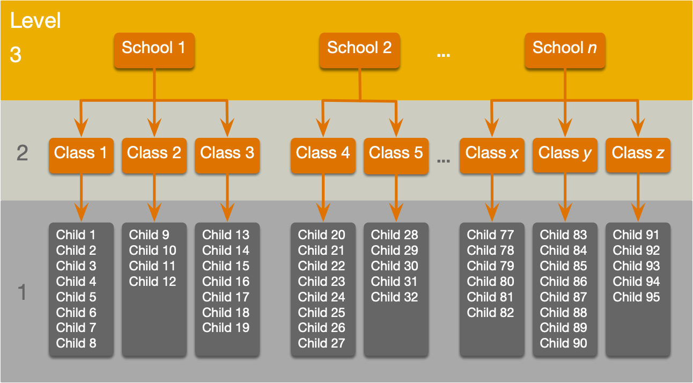
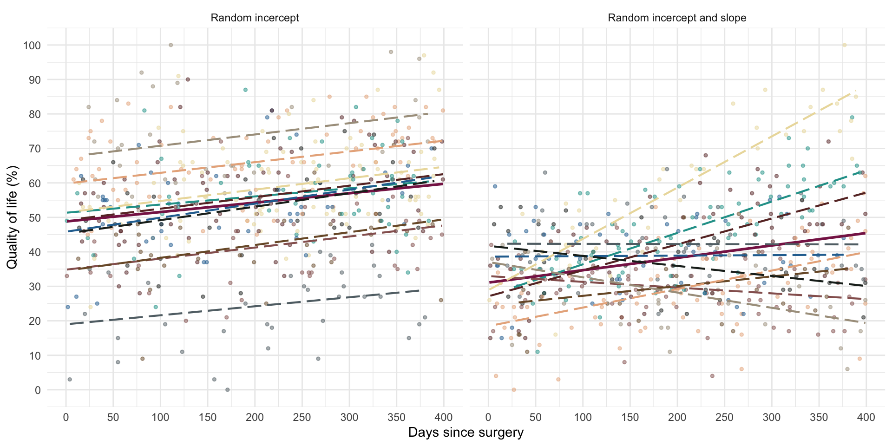
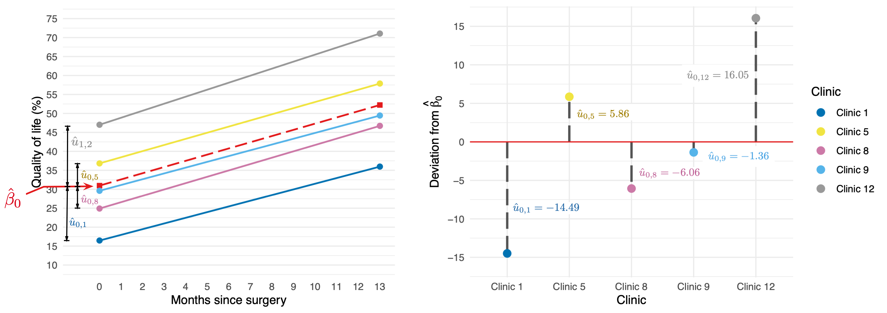

Multilevel models
Theory and concepts
Professor Andy Field
University of Sussex


|
Learning outcomes
- Understand what hierarchical data are
- Why we can’t use the OLS GLM
- Understand fixed and random coefficients
- Understand how to build models
Part 2
- Be able to conduct and interpret models of hierarchical data


Hierarchical data
- Data structures are often hierarchical
- Children nested within classrooms
- Observations nested within people
- Employees nested within organisations
- Patients nested within hospitals
- Patients nested within teams nested within hospitals
- Service users nested within clinicians nested within hospitals nested within NHS trusts!
- Zombies nested within rehabilitation clinics 😉
A two-level hierarchy

A three-level hierarchy

Why hierarchies matter
- Data from the same context will be more similar than data from different contexts
- Children in the same class will perform more similarly than children from different classes
- People treated in the same clinics should be more similar in response than those treated at different clinics
- Children in the same class will perform more similarly than children from different classes
- Lack of independence
- Violates the assumption of spherical errors (specifically, independence)
- Biases SEs, CIs and p-values

A surgical example
Research Questions
- Is quality of life after cosmetic surgery predicted by the length of time since surgery?
- Does this relationship depend on the reason for the surgery?
id: the participant’s participant codepost_qol: This is the outcome variable and it measures quality of life after cosmetic surgery.base_qol: We need to adjust our outcome for quality of life before the surgery.days: The number of days after surgery that post-surgery quality of life was measured.clinic: This variable specifies which of 21 clinics the person attended to have their surgery.reason: This variable specifies whether the person had surgery purely to change their appearance or because of a physical reason.
An initial model
Let’s start with ….
\[ \begin{aligned} \text{QoL}_i &= \beta_0 + \beta_1\text{Days}_i + \varepsilon_i \\ \varepsilon_i &\sim N(0,\sigma^2) \end{aligned} \]
The surgery data hierarchy

Fixed and random coefficients
- Intercepts and slopes can be fixed or random
- In OLS regression they are fixed
- Fixed coefficients
- Intercepts/slopes are assumed to be the same across different contexts (in this case clinics)
- Random coefficients
- Intercepts/slopes are allowed to vary across different contexts (in this case clinics)

Random intercept
OLS model
\[ \begin{aligned} \text{QoL}_i &= \beta_0 + \beta_1\text{Days}_i + \varepsilon_i \\ \end{aligned} \]
Random intercept model (composite)
\[ \begin{aligned} \text{QoL}_{ij} &= (\beta_0 + u_{0j}) + \beta_1\text{Days}_{ij} + \varepsilon_{ij} \\ \text{QoL}_{ij} &= [\beta_0 + \beta_1\text{Days}_{ij}] + [u_{0j} + \varepsilon_{ij}] \\ \end{aligned} \]
Random intercept model (alternative)
\[ \begin{aligned} \text{QoL}_{ij} &= \beta_{0j} + \beta_1\text{Days}_{ij} + \varepsilon_{ij} \\ \beta_{0j} &= \beta_0 + u_{0j} \\ \end{aligned} \]
Random intercept
\[ \begin{aligned} \text{QoL}_{ij} &= [\beta_0 + \beta_1\text{Days}_{ij}] + [u_{0j} + \varepsilon_{ij}] \\ \end{aligned} \]

\[ \begin{aligned} u_0 \sim N(0, \sigma^2_{u_0}) \end{aligned} \]
Random slope
Random intercept model (composite)
\[ \begin{aligned} \text{QoL}_{ij} &= (\beta_0 + u_{0j}) + \beta_1\text{Days}_{ij} + \varepsilon_{ij} \\ \text{QoL}_{ij} &= [\beta_0 + \beta_1\text{Days}_{ij}] + [u_{0j} + \varepsilon_{ij}] \\ \end{aligned} \]
Random slope model (composite)
\[ \begin{aligned} \text{QoL}_{ij} &= (\beta_0 + u_{0j}) + (\beta_1 + u_{1j})\text{Days}_{ij} + \varepsilon_{ij} \\ \text{QoL}_{ij} &= [\beta_0 + \beta_1\text{Days}_{ij}] + [u_{0j} + u_{1j}\text{Days}_{ij} + \varepsilon_{ij}] \\ \end{aligned} \]
Random slope model (alternative)
\[ \begin{aligned} \text{QoL}_{ij} &= \beta_{0j} + u_{0j} + \beta_1\text{Days}_{ij} + \varepsilon_{ij} \\ \beta_{0j} &= \beta_0 + u_{0j} \\ \beta_{1j} &= \beta_1 + u_{1j} \\ \end{aligned} \]
Random slope
\[ \begin{aligned} \text{QoL}_{ij} &= [\beta_0 + \beta_1\text{Days}_{ij}] + [u_{0j} + u_{1j}\text{Days}_{ij} + \varepsilon_{ij}] \\ \end{aligned} \]

\[ \begin{aligned} u_1 \sim N(0, \sigma^2_{u_1}) \end{aligned} \]
The covariance structure of random effects
Random intercept and slope for 1 predictor
\[ \begin{aligned} \begin{bmatrix} u_0 \\ u_1 \end{bmatrix} \sim N\Bigg( \begin{bmatrix} 0 \\ 0 \end{bmatrix}, \begin{bmatrix} \sigma^2_{u_0} & \sigma_{u_0, u_1}\\ \sigma_{u_0, u_1} & \sigma^2_{u_1} \end{bmatrix} \Bigg) \end{aligned} \]
Random intercept and slope for several predictor
\[ \begin{aligned} \begin{bmatrix} u_0 \\ u_1 \\ \vdots \\ u_n \end{bmatrix} \sim N\begin{pmatrix}\begin{bmatrix} 0 \\ 0 \\ \vdots \\ 0 \end{bmatrix}, \begin{bmatrix} \sigma^2_{u_0} & \sigma_{u_0, u_1} &\dots & \sigma_{u_0, u_n}\\ \sigma_{u_0, u_1} & \sigma^2_{u_1} & \dots & \sigma_{u_1, u_n}\\ \vdots & \vdots & \ddots & \vdots\\ \sigma_{u_0, u_n} & \sigma^2_{u_1} & \dots & \sigma^2_{u_n}\\ \end{bmatrix} \end{pmatrix} \end{aligned} \]
The danger zone!
Convergence
- As you include more random effects the number of parameters that need to be estimated from the data rapidly increases
- This increases the likelihood that the model won’t converge.
Level 1 errors

Normally distrubuted errors
\[ \begin{aligned} \varepsilon_{ij} &\sim N(0,\sigma^2) \end{aligned} \]
The covariance structure of level 1 errors
Spherical errors
\[ \begin{aligned} \Phi = \begin{bmatrix} \sigma^2_1 & 0 & 0 &\dots & 0\\ 0 & \sigma^2_2 & 0 & \dots & 0\\ 0 & 0 & \sigma^2_3 & \dots & 0\\ \vdots & \vdots & \ddots & \vdots\\ 0 & 0 & 0 & \dots & \sigma^2_n\\ \end{bmatrix} \end{aligned} \]
(Potential) Benefits of MLMs
- Modelling variability in effects across contexts
- Model the variability in intercepts
- Model the variability in slopes
- Model violations of the assumption of spherical errors
- Model differences in the variability of errors
- Model relationships between errors
- (Linear model for repeated observations – next two weeks!)
- Missing data
- MLMs (in general) cope with missing data
Model assumptions
- MLMs use maximum likelihood estimation not OLS
- Familiar assumptions
- Linearity and additivity
- Level 1 errors are normally distributed with mean of zero and constant variance (i.e. homoscedasticity)
- Independent errors (but we can model dependency)
- New assumptions
- Random effects (slopes and intercepts) are assumed to be normally distributed with mean of zero and constant variance (i.e. homoscedasticity)
Practical issues
Computing p-values
- There is no unifying method to compute p-values in multilevel models because the degrees of freedom of the test statistic are rarely known.
- df can be approximated (e.g., Satterthwaite and Kenward-Roger methods) but it’s unclear how good these approximations are for complex models/complex covariance structures.
Practical issues
Should effects be fixed or random?
- Three approaches
- Theory-driven
- Maximal model (Barr et al., 2013)
- Data-driven (include random effects that improve fit)
- Treat a predictor as a random effect if … (Bolker, 2015)
- You’re not interested in differences between the levels.
- You’re interested in quantifying the variability across levels of the variable.
- You’re interested in generalizing beyond the observed levels of the contextual variable.
- You have an unbalanced design.
- You have a categorical predictor that is not direct relevant to the hypothesis but for which you need to adjust (a nuisance variable).
Summary
- Data can be hierarchical and this hierarchical structure can be important.
- The OLS linear model simply ignores the hierarchy.
- Hierarchical models are just a fancy linear model in which you estimate the variability in the slopes and intercepts within contexts
- i.e. slopes and intercepts can be random variables (allowed to vary) rather than fixed (assumed to be equal in different situations).
- MLMs are a world of pain